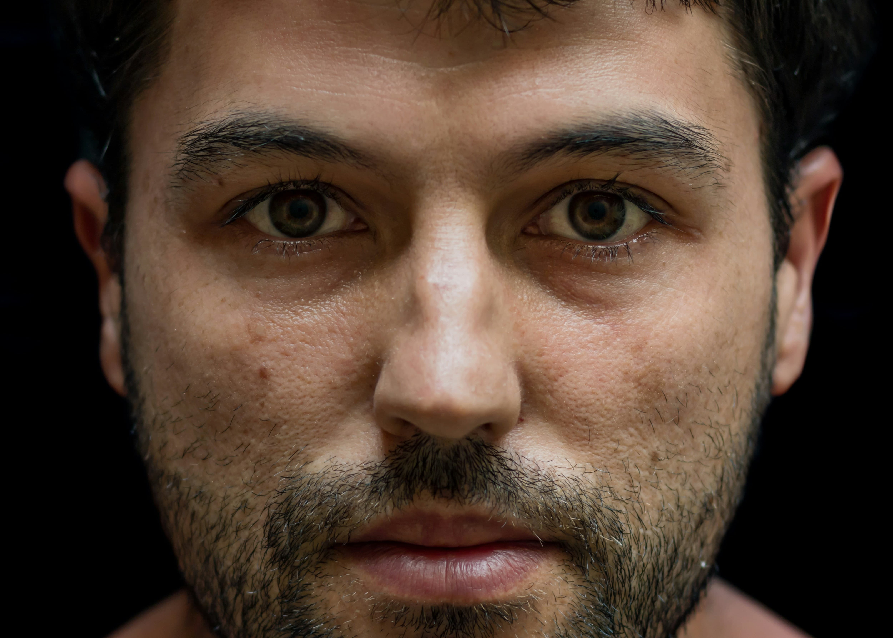
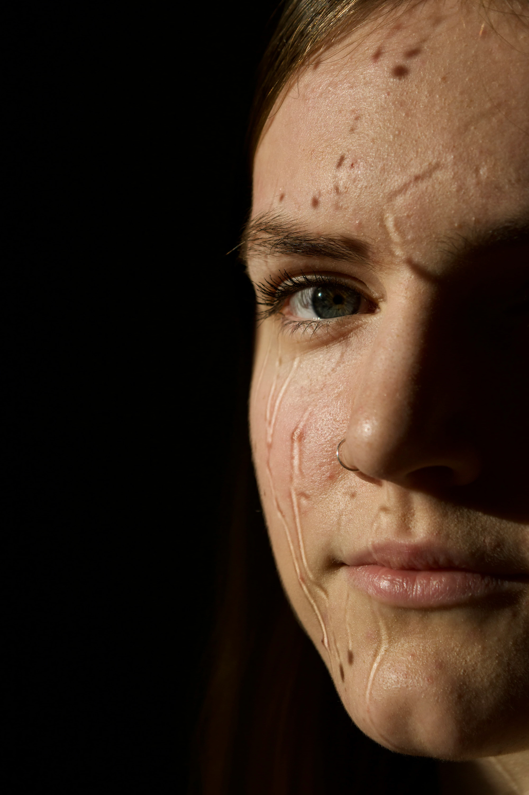
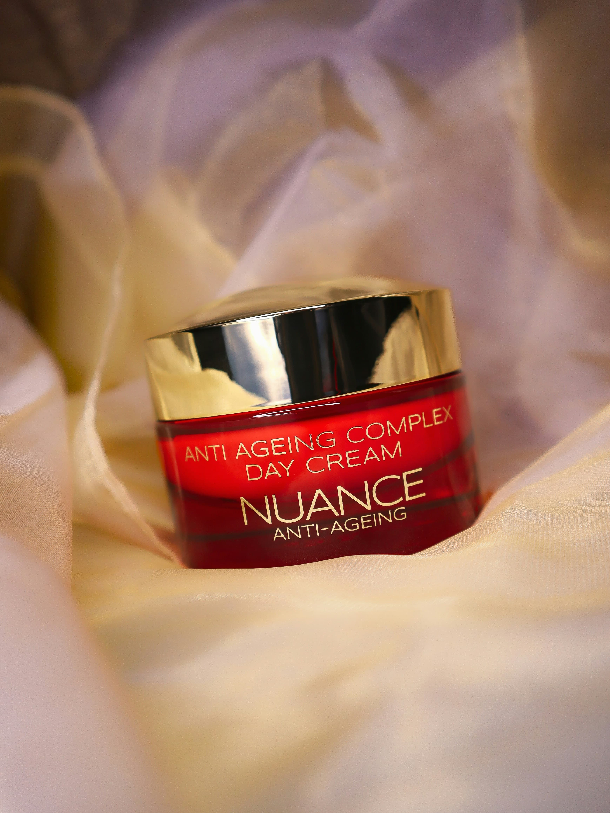
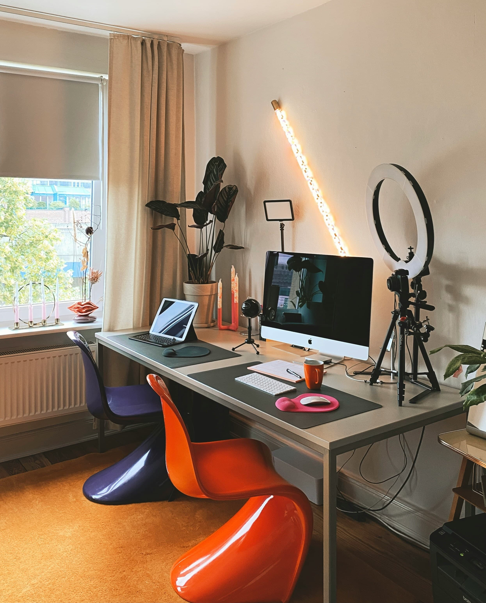

AI Face Analyzer
Upload your photo and get a detailed MogScore with ratings for all 6 facial metrics plus 4 personalized looksmaxxing tips. No API key needed.
Analyze My Face →Free AI face analyzer, complete PSL Scale wiki, tier rankings, and expert tips to help you win on Omoggle. Used by 10,000+ looksmaxxers worldwide.
Upload your photo and get an instant AI score — the same analysis Omoggle uses, available free anytime.
Upload your photo and get a detailed MogScore with ratings for all 6 facial metrics plus 4 personalized looksmaxxing tips. No API key needed.
Analyze My Face →Upload two photos and let the AI decide who mogs whom. Perfect for settling debates with friends or testing your progress after looksmaxxing.
Start a Battle →📖 New to looksmaxxing? Start with our Looksmaxxing 101 Guide before you analyze — it explains exactly what the AI is measuring and how to improve each metric.
From Omoggle basics to advanced looksmaxxing — all explained in plain English.

The viral AI face-rating platform where two strangers compete webcam-to-webcam on the PSL Scale.

To mog someone means to completely outclass them in facial appearance. Learn the origin and how it's used on Omoggle.

Omoggle uses the PSL Scale as its scoring backbone. Here's what each number actually means.

The complete beginner's guide to looksmaxxing — what to prioritize and what's actually proven.
Canthal tilt is heavily weighted by Omoggle's scoring algorithm. Here's what it is and how to maximize it.

Camera angle, lighting, background — these setup factors can raise your score by 1.5–2 points immediately.
The latest viral moments, streamer scores and platform updates.
xQc's Omoggle run went viral after he lost bout after bout. Jesse's reaction got 24K likes.
On May 5th, 2026, Twitch officially removed the ban on randomized video chat services.
The looksmaxxing streamer ragequit after being out-scored. The clip exploded across X and TikTok.
Omoggle is a webcam platform that pairs two random strangers and uses AI to score both faces on the PSL Scale (0–10). The higher scorer wins. Both players gain or lose ELO points that determine their global rank.
Yes — as of May 5th, 2026, Twitch officially updated its Community Guidelines to allow randomized video chat services including Omoggle.
Two ways: setup optimization (camera above eye level, natural side lighting, neutral background) for immediate 0.5–2.0 point gains; and looksmaxxing (skincare, gym, mewing) for long-term permanent improvement.
The PSL Scale (Physical, Status, Looks) rates facial attractiveness 1–10 based on symmetry, canthal tilt, jawline, cheekbones, skin clarity, and harmony. Omoggle uses an AI version of this scale.
Looksmaxxing is the practice of systematically improving your physical appearance through skincare, gym training, posture correction, hair optimization, and techniques like mewing.
Want to go deeper? Read our most popular guides: